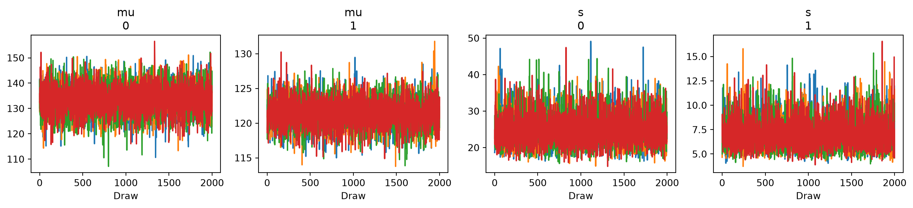
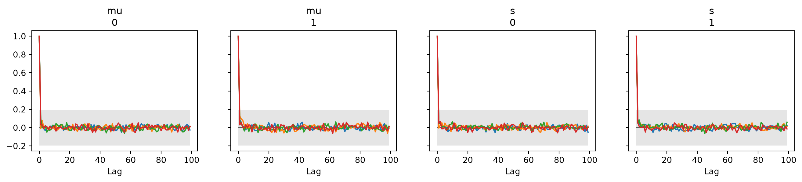

An Introduction to the Usefulness of Bayesian Inference
Author
Dallin Anderson
Beginning
When a Data Scientist exits the realm of collegiate education, they come prepared with the skills to answer questions about big data using statistics and the methods they have developed in their languages. However, the world of data is ever expanding and always changing. Sometimes the data you need does not exist yet and an expensive experiment is required to gather it. Sometimes it does exist but not much has been recorded for some various reason. How then is our newly endowed graduate expected to handle solving a problem when the data isn’t as big as they expected?
This problem is often found in the nooks of small businesses, eager to hire our college graduate because the bigger the fish the stronger the bait needed to hook them. And as we have said, they are small tugboats in a world of oceanliners. They can’t afford to get the big data, nor can they afford the PhD statisticians. So they look towards our graduate for hope. What hope is there?
Well, when data is available by the bushel and collects like rain from a Midwest storm, standard frequentist methods will suffice. They assume LINE assumptions are met because in the vast buckets and buckets of data available to them, small outliers aren’t enough to shift the expected value to a great degree. But because data might not be as available as one would be lead to believe, the skilled statistician will keep a few bayesian methods in their back pocket, to whip out as a secret magic trick when their usual routine falls flat.
Bayes and His Theorem
Bayesian statistics gets its name from the man Thomas Bayes, who flipped the script in regards to what statistics was. Rather than treating probability as a fixed value of frequency, he believed probability to be the representation of belief and can update when new information is received. (History)
The main draw though isn’t how data is perceived. Nor is it that bayesian statistics is easier than the popular frequentist methods, though some may argue that in many cases that is true. Rather Bayes provided a path for statistics that is probabilistically consistent. Meaning that as the data gets harder, more complex, less normal, the framework of bayesian statistics stays the same.
Let’s do a quick overview of the math before getting into actually putting a model into practice. Commonly in Statistics we know that
\(P(A \mid B) = \frac{P(A \cap B)}{P(B)}\)
Bayes looked at this relationship and realized that by multiplying the probability in the denominator to the other side, the math could be manipulated into the following, known now as the Bayesian Theorem.
\(P(A \mid B) = \frac{P(B \mid A)\,P(A)}{P(B)}\)
In applying the bayesian method, we redefine what each of these probabilities mean.
With more study, Bayes realized the following identity about the relationship between data and our parameters. The posterior we are looking for, being the parameters given data, is proportional to a function of the likelihood and priors, the likelihood being data given parameters and our prior being the probability of each parameter.
This is the foundational knowledge of bayesian statistics. That if we can determine priors: what we think should happen and a small sample from the population; as well as the likelihood of our data: the sampling density or better yet the function our data might take; we can produce a posterior that represents what our parameters are like given our data.
What’s the Point
The issue was, trying to create a posterior distribution by hand is incredibly annoying. For a long time people dismissed bayesian ideas because they just weren’t practical. The Monte Carlo simulation methods changed everything. Now there was a way to create distributions given general inputs and simulate large amounts of data reliably. With that tool, the bayesian ideal became possible. Given a prior and a likelihood, a person could use data to simulate draws from a large population with only a small amount of samples. As long as the priors were well informed, the data was sound, though less data meant priors had greater influence.
What does that mean exactly? Well, we can simulate what we think the population might look like, given our data no matter how small. Want to know what your company might be worth? Now you can create that population without ever entering the stock market! Want to know if a drug is effective? Now you can for a fraction of the cost! Bayesian methods empower those with less access to data or the finances to collect it to do more as long as the research into the priors is sound. Best of all, because the data is simulated using methods grounded in mathematics, hypothesis tests and other statistics are no longer vague values you have to estimate. No, you can know the exact probability, with absolute confidence. Parameters themselves are not fixed and unknown. They are a function of their probability, which you know because of the simulated population.
Simply put, the metrics that frequentists warn for a statistician to be wary of, making sure your diagnostics are correct, can be confidently stated by the bayesian and backed up by hard evidence of what priors they chose and why. Statistics moves from the realm of interpretable to empirical.
Bayes in Action
Let’s do an example. In R, we use the Nimble or STAN code to simulate MCMC draws from a posterior distribution, but with the object oriented language of Python at our fingertips, we can do the same but faster. It should be noted though that STAN code is rather versatile across many environments, including Python, so an understanding of STAN may be more useful to the aspiring bayesian thinker. The following code uses the PyMC and Arviz packages to accomplish the task.
PyMC is a package that functions similar to Nimble code, so I have utilized it as I am more familiar with Nimble’s way of doing things. Another popular package is NumPyro which has a harder learning curve but is more data efficient. Arviz is a diagnostic package that allows us to check the convergence and relevant statistics to determine if the model we produced is able to be used.
For our demonstration we will be using a 2x33 dataframe that contains two treatments in one column and a response in the other. Imagine these the metrics of a two types of social media posts and the number of views as the response, but you only have a week until launch so you could only collect 33 hours of data to work with. Or maybe it’s two drugs affecting blood pressure. Choose any number of examples you want. For our purposes, we’ll stick with the social media example. Either way, a frequentist would say the sample size is barely big enough to meet the Central Limit Theorem but with so few samples the power of the study is rather small. However, a bayesian would be right at home.
One last note, bayesian statistics uses a lot of computational power in order to simulate the population. PyMC tends to use PyTensor and BLAS/LAPACK compilers that may not be loaded on your computer. We can bypass this by importing the nutpie sampler which does not rely on these powerful but draining tools.
import pandas as pdimport pymc as pmimport arviz as azimport numpy as npimport nutpieexc = pd.read_csv("Data/exercises3.dat", sep=r"\s+", header=None, names=["V1", "V2"])tmt = exc['V1'].values # treatments (1 or 2)y = exc['V2'].values # responsesn_groups =len(np.unique(tmt))tmt_idx = tmt -1# convert {1,2} → {0,1} to work with PyMC
g++ not available, if using conda: `conda install gxx`
Here you can view a bit of the data
exc.head()
V1
V2
0
1
121
1
1
94
2
1
119
3
1
122
4
1
142
exc.tail()
V1
V2
28
2
126
29
2
127
30
2
111
31
2
112
32
2
121
With our data loaded, now we need to build our model. Remember, our goal is to create a posterior distribution from which we can draw from, simulating our population. To do that, we need to establish our priors, or rather what we think the data should look like. Keeping with our social media example, say we did some research and found that newly created channels on our given platform, when marketed for the first time, get around 120 views. As our sample is derived from someone’s natural response, we want a normal distribution. Our posterior, for reasons too complicated to explain in a single post, will then be a Normal distribution as well. For safety, we’ll be cautious and set that expected prior for our mean, or mu, at a standard deviation of 20 views. Our prior for the standard deviation of our expected is unbiased, because we don’t know the variance of how people interact on our given site. Thus we’ll keep it at a standard gamma prior.
Then we define how we want to sample from the distribution. The general idea is to take as many draws as possible, but we want to balance the effectiveness of our model with the computational power we are using. I tried being ambitious and setting the model to have 16,000 draws during testing, but it took over 30 minutes to run which isn’t effective on my lone computer. For this demo, we’ve set it to 2,000 draws per chain. We perform multiple chains because of the Fisher design principle of repetition. We would only do one chain, but who’s to say that our model isn’t flawed? Multiple chains help to establish a model’s effectiveness and let us see if our priors are making our mean too unstable.
Next we tune the model. Tuning removes the first 1000 draws as the MCMC needs time to reach convergence and we don’t want that period of time where we are warming up our engines to be caught as actual time in the race. So in actuality our model will only end up with 1,000 draws by the end. In R we would also thin to remove dependence on the draws. MCMC is effective but sometimes the lag time between each draw might be high, meaning that the result of sample 1456 is closely related to sample 1457. We thin to remove that autocorrelation. However, PyMC is far better at producing less autocorrelated values than Nimble is so we don’t include it here.
with pm.Model() as exc_model:# Priors for each treatment group mu = pm.Normal("mu", mu=120, sigma=20, shape=n_groups) s = pm.Gamma("s", alpha=1.1, beta=0.1, shape=n_groups)# Likelihood y_obs = pm.Normal("y_obs", mu=mu[tmt_idx], sigma=s[tmt_idx], observed=y)# Sampling trace = pm.sample( draws=2000, tune=1000, chains=4, target_accept=0.9, nuts_sampler="nutpie", )
NUTS[nutpie]: [mu, s]
The diagnostics below are important in checking that our posterior distribution converged, or rather that the distribution functions as expected. If it was constantly increasing infinitely, we would know that our probability could not converge to 1 and thus our analysis would be void. A good trace plot should be centered on the plot as much as possible and stay at a steady line with no drastic curves upward or downward
# Trace plotsaz.plot_trace(trace)

Autocorrelation looks at how correlated each produced is to each other by a metric called lag. A lag of 2 implies the correlation between one value and the value 2 steps after it. We want a very low autocorrelation since a high metric would imply one sample depends on another, invalidating the data.
# Autocorrelationaz.plot_autocorr(trace)

Finally we can look at the values produced by our posterior distribution, including the two means and two standard deviations that were generated based on our priors and likelihood. ess_bulk tells us the effective sample size, or how many of the generated samples from the chains are actually usable. A value of at least 6000 is preferred, which we barely met for our 2nd mu. Rhat, or the Gelman–Rubin statistic, checks that each of the chains converged to the same posterior distribution. We want the values as close to 1 as possible, with 1.05 or higher being bad. The other metrics refer to the credible intervals for the mu/sd (the eti 89% lower and upper bounds), how well sampled the distribution tails are (ess_tail), and the uncertainty of the sampling process itself, the Monte Carlo Standard Error.
Now, what if we wanted to perform a regression model? In a frequentist world, we need a new formula with new assumption and yada yada yada. Bayesian statistics doesn’t need that. Simply define your y and mu as you would in a regression model, and bam! You’re good to go! Validation is the same and the resulting statistics are tangible. The process changes slightly to account for the different analysis but the framework is the same. Such is the power of bayesian statistics.
with pm.Model() as exc_model_regression:# Priors for regression coefficients alpha = pm.Normal("alpha", mu=120, sigma=20) # intercept beta = pm.Normal("beta", mu=0, sigma=10) # slope for treatment effect# Prior for residual standard deviation sigma = pm.Gamma("sigma", alpha=1.1, beta=0.1)# Expected value of each observation mu = alpha + beta * tmt # regression mean# Likelihood y_obs = pm.Normal("y_obs", mu=mu, sigma=sigma, observed=y)# Sampling trace = pm.sample( draws=2000, tune=1000, chains=4, target_accept=0.9, nuts_sampler="nutpie", )
Because our distribution passed the validation checks, we can pull the samples and perform a hypothesis check easily. In this case, the exact probability that mu2 is greater than mu1.
If the person we are giving this info to questions whether the data is reliable, we don’t need to figure out how to explain complex statistics metrics into common sense. We can simply discuss what we knew, how we factored that into making our distribution, and that the model passed validation checks. And since our model produced a posterior distribution with draws, we can simulate events using the found mu2 and sd2, called the posterior predictive distribution. In this case, we predict about 126 views per hour for our social media method 2.
This is the power of bayesian statistics. Because we can trace back and explain every part of our model mathematically, the results we produce are empirical and decisive, with fixed bounds. There is no such thing as confidence, because we can produce credible results. It’s a huge game changer. If we want to introduce a new technology to the market, bayesian statistics lets us predict its success, to a degree, without ever creating a survey. It’s an awesome tool for small businesses and for large ones that want to save money. More so, it’s a new way of thinking about statistics, which lends itself to even greater applications.
One final example of the potential of bayesian statistics is its use in Large Language Models, the technology that powers AI agents. A bottleneck in building these is the training process which requires massive amounts of data to be fed into the model and analyzed. Bayesian teaching enables probabilistic reasoning in large language models is a paper published at the start of 2026 and argues that training LLMs on the basics of bayesian inference improves their reasoning abilities, meaning they learn faster and more reliably. Those going into data science would be remiss not having the knowledge to improve their models, and at a cheaper cost because of bayesian statistics.
Learn More
Though we have covered the bare basics of bayesian methods in our exploration, the opportunities to study this topic are only growing since their inception. Brigham Young University has been leading the charge, with several professors having a background in the bayesian methods. As of writing, the STAT 251 class will introduce the foundations needed to understand the methodology. Then a student can choose between STAT 466 which focuses on developing an understanding of bayesian theory through mathematics or STAT 451 which dives into the code to implement bayesian methods. The python code demonstrated today draws from the syntax taught in the latter.
Do not fret though! If academic curriculum lay beyond your reach, Gilbert W. Fellingham and Scott A. Baldwin have answered your unsung lamentations with their book An Introduction to Applied Bayesian Methods. Releasing in November of 2026, this text covers what would be taught in the STAT 451 course and provides the R-code to immediately apply the methods they preach. I was given early access to the text and while it is less complex than your standard tome it boasts industry-applicable tools to get you on your way. Much of what was discussed in this article pulls from that book. Highly recommend picking up a copy.
Bayesian statistics may not be as popular as our tried and true frequentist friends but the hope is after reading you may be convinced, if only ever so slightly, to prepare amongst your tricks a bayesian method or two. For though the world is big and full of data, what is new is usually rather small. But with this method in your tool kit, no meaning is impossible to uncover.